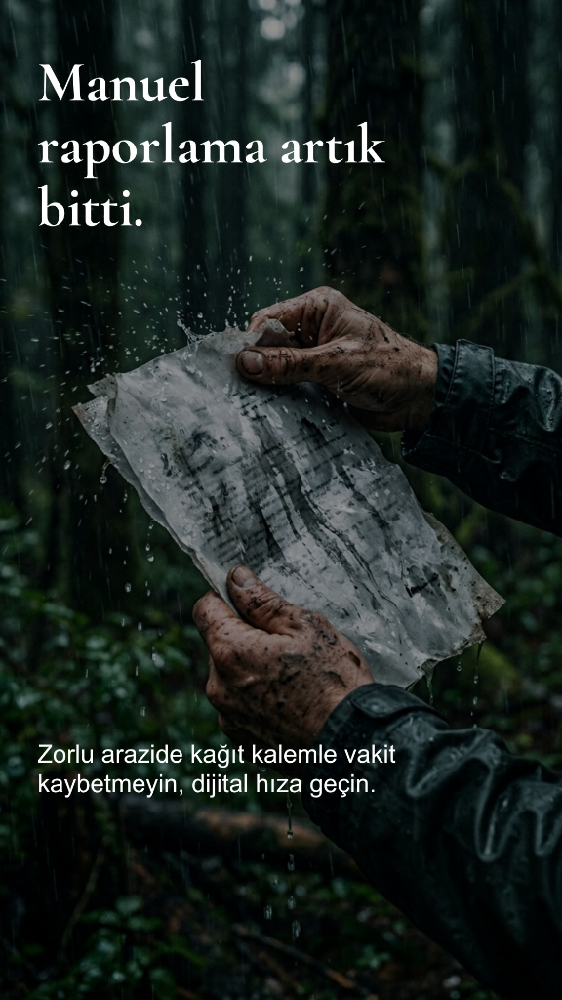
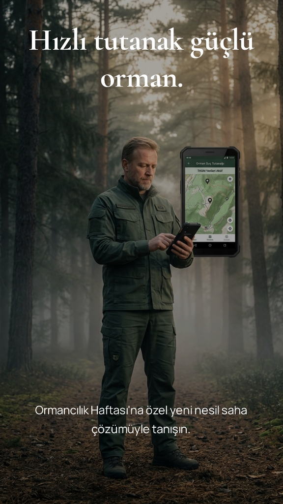

Devlet Ormanlarını Birlikte Koruyalım
Sahadaki
Sahadaki
Güçlendirici Asistanınız.
Orman muhafaza memurları için özel olarak tasarlandı. Çevrimdışı haritalar, mülkiyet sorgulama ve yapay zeka destekli sesli tutanak yazımı ile olay yerinde zaman kazanın.

Görev Yükünüzü Hafifleten Temel Yenilikler
Teknolojinin sunduğu imkanlarla, sahada evrak doldurmak yerine asıl görevinize odaklanın.

Kesintisiz ve Akıcı
Bir Devriye Süreci.
-
01
Olay Yerini Tespit Et
Harita üzerinde parsel, mülkiyet ve alan ölçümlerini saniyeler içinde tamamla.
-
02
Kanıtları Topla
Şüphelileri, fotoğraf delillerini, el konulan emvali uygulamaya yükle.
-
03
Evraklarını Oluştur
Resmi evrak ve krokiler saniyeler içinde PDF olarak çıktıya hazır.
Sahaya İnmeye Hazır Mısınız?
Android cihazınız için uyumlu en güncel APK'yı indirerek asistanınızı cebinize yükleyin.
V.1.1.6 İndir